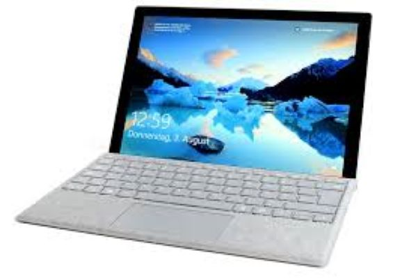

Microsoft Surface Pro
The Microsoft Surface Pro 2017 is a versatile 2-in-1 device that combines the functionality of a tablet and a laptop. Released in mid-2017, it features a sleek design, a high-resolution PixelSense display, and a detachable keyboard, making it suitable for both productivity and entertainment. Powered by Intel's 7th generation Core processors, it offers improved performance and battery life compared to its predecessors. With support for the Surface Pen and Windows Ink, it caters to creative professionals and casual users alike. The Surface Pro 2017 is praised for its portability, robust build quality, and seamless integration with the Windows ecosystem.